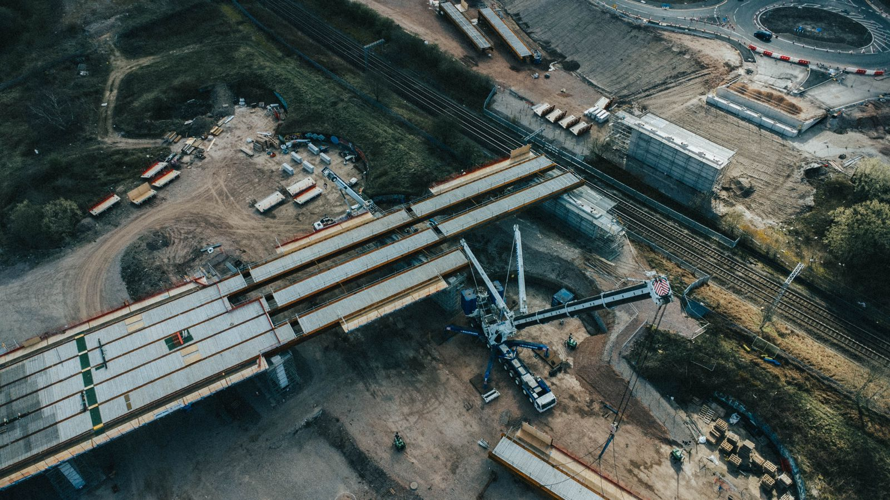
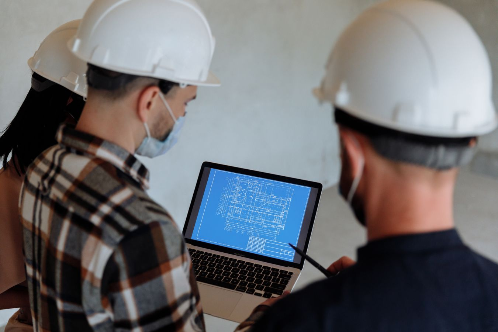
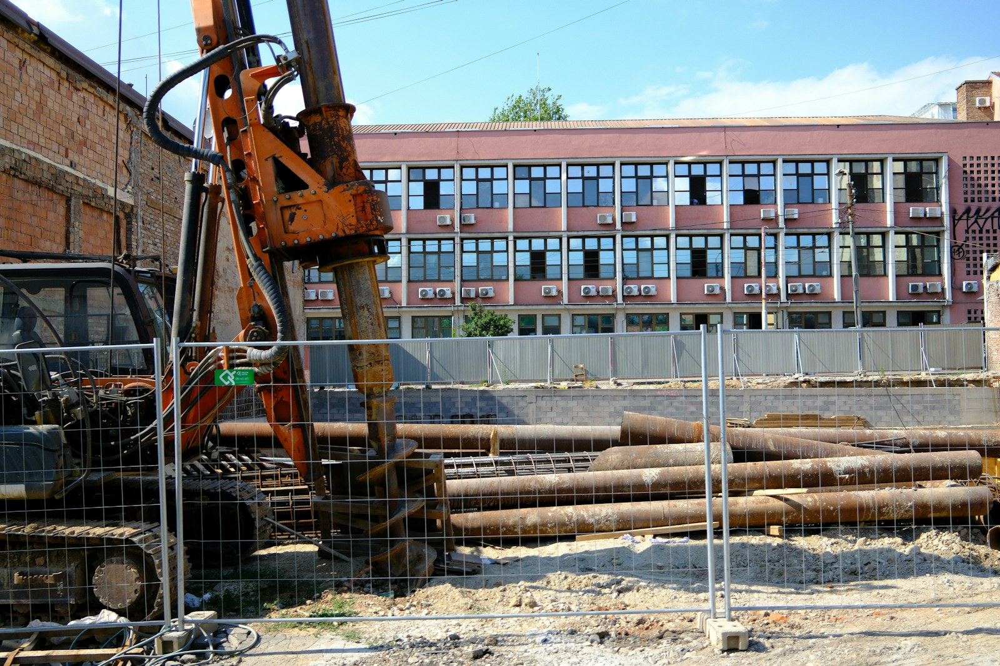

17–20 Pre-app plan sets209 km Water-supply program3 Active commercial bids
Design → Permit → BuildBuilding clarity into every phase.
A-01
Professional profile
Between early design and field-ready delivery.
Construction moves faster when permitting, utilities, bids, and field reality align early.
Pre-constructionPermittingUtility coordination
Site / systems / delivery
A-02
Selected projects
Work with consequence.
Four projects spanning infrastructure design, construction analytics, trenchless engineering, and sustainable building systems.

Highway systems01
Drainage design
Hydrology · sequencing · estimating
Project 01 / 04 · Academic
Highway Storm Sewer Drainage Design & Construction
Designed a complete highway stormwater drainage system with retention and detention ponds, culverts, catch basins, and storm sewer networks. The work included hydrologic and hydraulic analysis, cost estimating, and construction sequencing.
Highway construction
Hydraulics
Cost estimating

Construction analytics02
Workflow clarity
Power BI · RFIs · submittals
Project 02 / 04 · CON 593
RFI & Submittal Turnaround Analysis Dashboard
Evaluated 120+ RFI and submittal records with an average cycle time of 8 days and 6% beyond SLA. Delay analysis and subcontractor interviews informed a Power BI dashboard with escalation alerts to improve turnaround.
Designed a 2.4 km heavy industrial subsea pipeline using HDD and microtunneling, with procurement planning designed to avoid environmental disruption. Geotechnical study informed borehole alignment and material selection, decreasing deflection by 2.3%.
Developed the thermal-comfort strategy within a team LEED Indoor Environmental Quality proposal for Desert Meadows Preschool. The concept addressed air temperature, radiant temperature, air speed, and humidity through smart thermostats, operable windows, and automated blinds, supported by a classroom floor-plan layout.
LEED IEQ
Thermal comfort
Smart controls
01 / 04
A-03
Experience log
Where plans meet reality.
Select a role to explore the field responsibilities and measurable scope behind it.
Take commercial projects from early design through permitting and utility coordination for a Phoenix-based contractor delivering restaurants, drive-thrus, gas stations, convenience stores, and retail projects across metro Phoenix and southern Arizona.
Prepared 17–20 pre-application plan sets in Revit and AutoCAD.
Prepared county and municipal submittals across Maricopa, Pinal, and Pima Counties and municipalities including Tempe, Mesa, and Gilbert.
Coordinated with APS to serve added restaurant load from existing infrastructure, reducing cost and schedule impact.
Review opportunities on BidNet and currently manage 3 active commercial bids.
Maintain RFI logs, field-issue tracking, and aligned contractor and vendor schedules.
Joined the final 12 months of a 209 km pressurized water-supply system serving 34 villages, with engineering and QA/QC oversight for a 50+ km section.
Coordinated 12+ civil, mechanical, and pipeline subcontractors through sourcing, submittal approvals, and specification review.
Resolved RFIs and field variances with engineering teams, utility owners, and agencies.
Built an Excel cost-tracking and forecasting model against the budget baseline.
Supported field engineering and material-quality validation for a $38M, 3 km highway bridge feasibility study.
Supported equipment and raw-material procurement across 8 material lines.
From civil foundations to construction leadership.
May 2023
Bachelor of Engineering · Civil Engineering
Ganpat University · Mehsana, Gujarat
2021 — 2024
Field experience across residential, highway, and pipeline construction
Progressed from project engineer intern to project engineer, coordinating delivery across multiple construction types.
May 2026
MS · Construction Management & Technology
Arizona State University · Tempe, Arizona
Sep 2026 — Present
Pre-Construction Coordinator · Arktent Construction
Phoenix, Arizona · Commercial pre-construction, permitting, utilities, and bids
A-06
Credentials
Prepared for the work.
Professional certifications and training supporting safe, efficient, and accountable project delivery.
SafetyOSHA 30-Hour
Construction safety · OSHA
SustainabilityLEED Green Associate
Sustainable building · USGBC
DocumentationBluebeam Certified Professional
Construction documentation · Bluebeam
ManagementConstruction Manager in Training
CMIT designation · CMAA
PlatformProcore Certified
Project management · Procore student
SchedulingPrimavera P6
Project scheduling · Oracle
A-07
About Aum
The person behind the plans.
A civil engineer and construction management professional connecting design, permitting, utilities, project controls, and field delivery.
Profile / AD-01Aum DabhiPhoenix, Arizona

Infrastructure experience / field delivery
DESIGNTOFIELD
I am Aum Dabhi, a civil engineer and construction management professional based in Phoenix. My work sits at the point where design intent becomes a permitted, coordinated, field-ready plan.
At Arktent Construction, I guide commercial projects through pre-application planning, jurisdiction research, permitting, APS power coordination, bidding, and issue tracking. Earlier roles built my field foundation across a 209 km pressurized water-supply program, highway and bridge construction, residential closeout, and construction-focused AI research.
Good pre-construction removes unknowns before they become field problems.
Based
Phoenix, Arizona
Current role
Pre-Construction Coordinator Arktent Construction
Education
MS, Construction Management & Technology BE, Civil Engineering